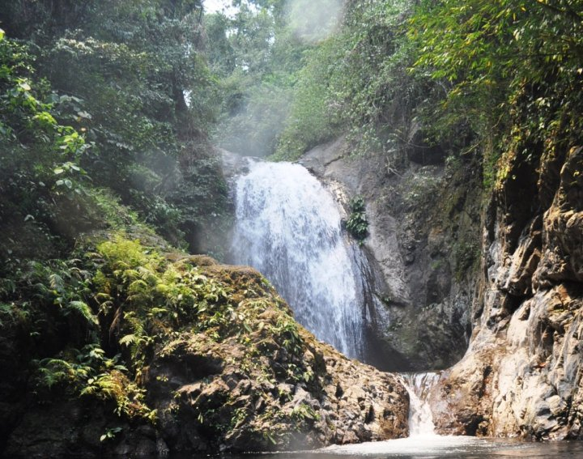

Overlooking Viewdeck
A scenic viewpoint showing rolling hills, forests, rivers, and rice fields. Sorrounded by lush woodlands, streams, and terraced farms. Hidden gem for nature lovers and photographers.
Adams, Ilocos Norte is a peaceful mountain town similar to Baguio City in climate and terrain. Surrounded by forests and cloud-covered mountains, it remains untouched by modern development.
The town preserves strong cultural traditions and relies mainly on agriculture, making it a beautiful example of harmony between people and nature.
A scenic viewpoint showing rolling hills, forests, rivers, and rice fields. Sorrounded by lush woodlands, streams, and terraced farms. Hidden gem for nature lovers and photographers.
A 25-foot waterfall with refreshing waters and natural basins. In the region of Adams are 18 waterfalls, with Anuplig Falls being the most popular.
The hike to Anuplig Falls takes about two hours and includes river crossings and forest trails. The waters flow into the Bolo River and reach the China Sea.

Famous for dramatic sunrises and sunsets with panoramic mountain views. The spot serves as a romantic getaway for couples and a peaceful retreat for nature lovers. A travel to Adams is incomplete without visiting Lovers' Peak.

The longest hanging bridge in Ilocos Norte and a vital lifeline of the town. It connects communities and offers stunning views of the Bolo River and surrounding forests.